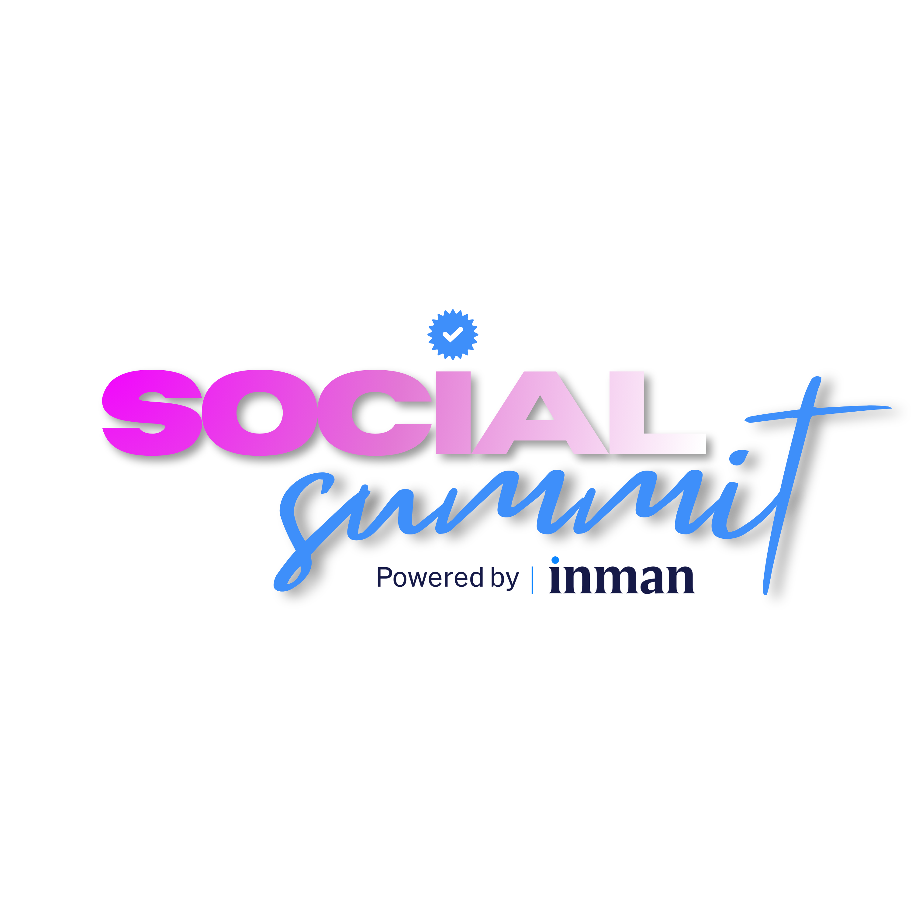
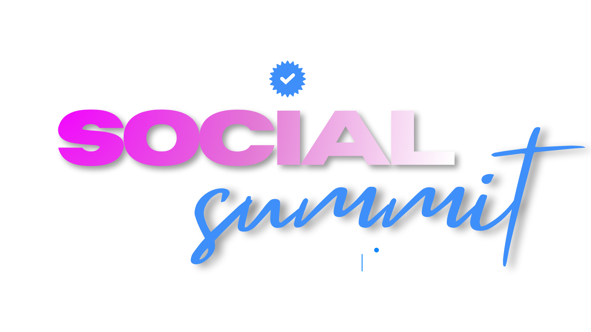
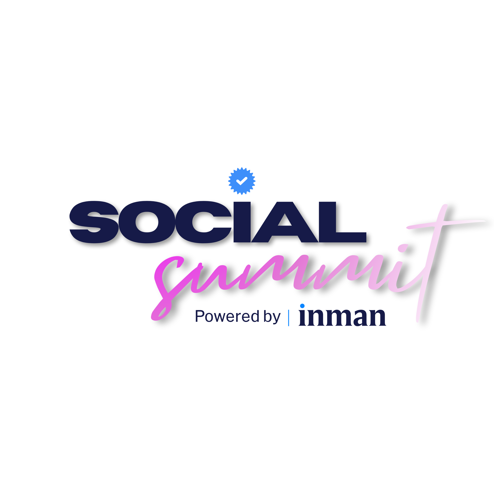
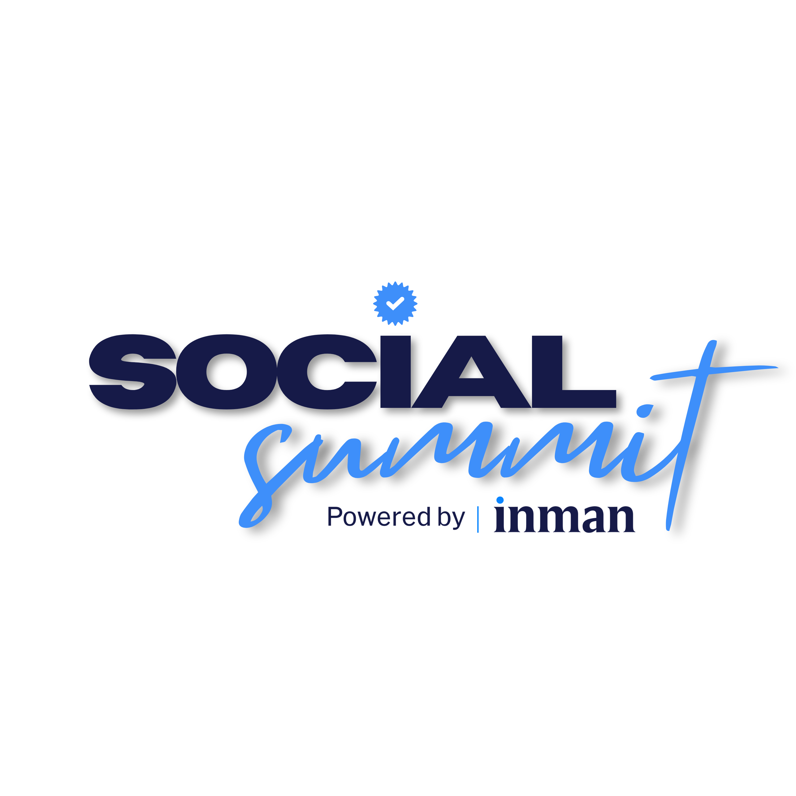
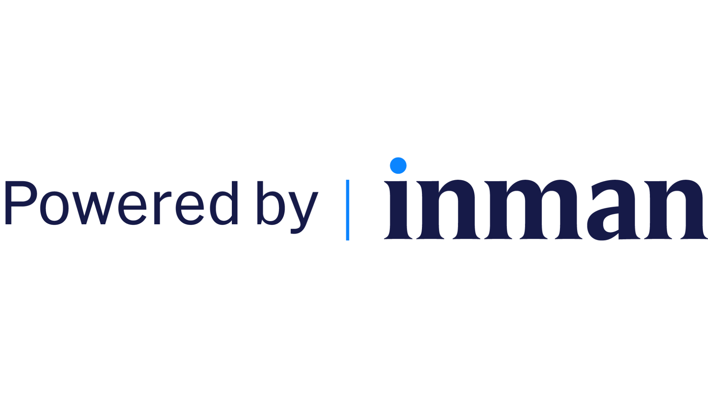
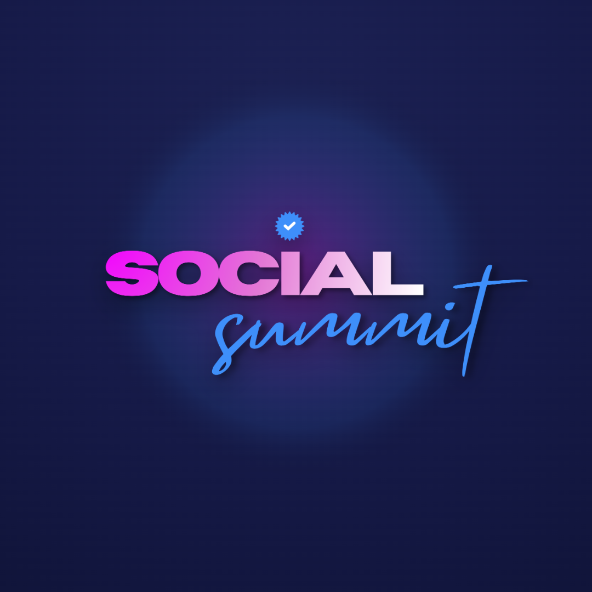

Social
Summit
Powered by Inman. The complete brand, token, and component reference for Andrew Jevin's creator-led real estate event.
Social Summit is entering its next chapter. Founded by Andrew Jevin and now powered by Inman, the event brings together the real estate professionals, creators, marketers, and industry leaders shaping how agents show up, build visibility, and grow through content. The same Social Summit energy people already know is now backed by Inman's national media platform, event infrastructure, editorial reach, and industry authority.
This document is the machine- and human-readable export of the design system. It carries the brand architecture, the writing rules, every design token with its literal value, the component inventory with props, and the grounding event facts. A system reading this file has everything needed to produce on-brand Social Summit work.
Brand architecture
| Layer | Entity | Role |
|---|---|---|
| Primary brand | Social Summit | Visually dominant in all consumer-facing assets |
| Endorsement | powered by Inman | Credibility stamp — smaller, cleaner, never overpowers the mark |
| Founder / host | Andrew Jevin | Programming, speaker curation, creative direction, community voice |
| Launch strategy | Hype Boss | Behind the scenes; not front-facing |
| Institutional | Inman | National media reach, editorial authority, sponsorship, event infrastructure |
The system protects one tension: Social Summit has grassroots creator loyalty; Inman brings legitimacy and distribution. Creative should read as Andrew's community on a larger platform, with his programming and voice still at the center. Do not let an asset read as Inman Connect.
Logo system








The "become known" device. Social-proof tag, bullet, or stamp.

Rules. Keep Social Summit dominant. The Inman endorsement sits smaller and cleaner — a corner tag, footer, or end card. Reveal order in motion and layout: Social Summit first, powered by Inman second. All lockups ship as PNG so wordmarks stay pixel-accurate regardless of font availability.
Download logosFavicon

Colors
Sampled directly from the logo artwork. Three layers: social energy, Inman endorsement, editorial authority. One bold accent per campaign — never a rainbow. Energy comes from movement, type, and people.
Brand core
Hex: #ED26F2
RGB: 237, 38, 242
CMYK: 2, 84, 0, 5
HSB: 299, 84, 95--ss-fuchsia
Hex: #E948E6
RGB: 233, 72, 230
CMYK: 0, 69, 1, 9
HSB: 301, 69, 91
Hex: #E567DB
RGB: 229, 103, 219
CMYK: 0, 55, 4, 10
HSB: 305, 55, 90
Hex: #3E8FFA
RGB: 62, 143, 250
CMYK: 75, 43, 0, 2
HSB: 214, 75, 98--ss-azure
Hex: #0B84FF
RGB: 11, 132, 255
CMYK: 96, 48, 0, 0
HSB: 210, 96, 100--ss-inman-blue
Hex: #161A48
RGB: 22, 26, 72
CMYK: 69, 64, 0, 72
HSB: 235, 69, 28--ss-navy
Neutrals & warm event layer
Hex: #10132E
RGB: 16, 19, 46
CMYK: 65, 59, 0, 82
HSB: 234, 65, 18--color-text
Hex: #3A4072
RGB: 58, 64, 114
CMYK: 49, 44, 0, 55
HSB: 234, 49, 45
Hex: #6B7098
RGB: 107, 112, 152
CMYK: 30, 26, 0, 40
HSB: 233, 30, 60--color-text-muted
Hex: #D9DCEC
RGB: 217, 220, 236
CMYK: 8, 7, 0, 7
HSB: 231, 8, 93--color-border
Hex: #F4EFE7
RGB: 244, 239, 231
CMYK: 0, 2, 5, 4
HSB: 37, 5, 96--ss-champagne
Hex: #EADFCE
RGB: 234, 223, 206
CMYK: 0, 5, 12, 8
HSB: 36, 12, 92
Signature gradients
wordmark blend
fuchsia → azure
azure → Inman
fuchsia → violet
Color tokens
| Token | Value | Use |
|---|---|---|
--ss-fuchsia | #ED26F2 | Primary CTA, social-energy pop |
--ss-azure | #3E8FFA | Script accent, secondary highlight |
--ss-inman-blue | #0B84FF | Kickers, links, Inman-facing accents |
--ss-navy | #161A48 | Dark surfaces, editorial authority |
--ss-navy-deep | #0E1234 | Hero / full-bleed backgrounds |
--ss-champagne | #F4EFE7 | Warm sections, testimonial cards |
--color-primary | → fuchsia | Semantic CTA alias |
--color-secondary | → Inman blue | Semantic endorsement alias |
--color-text / --color-text-muted | #10132E / #6B7098 | Body / captions |
--color-border | #D9DCEC | Card hairlines |
--scrim-bottom | navy 0.82 → 0 | Text protection over photography |
Typography
Two behaviours: a heavy display face for the big words, and a clean editorial grotesque for hierarchy and body. A script accent echoes the "summit" mark; a serif carries Inman-facing editorial credibility.
| Role | Token | Family | Behaviour |
|---|---|---|---|
| Display | --font-display | Horizon | 800/900, UPPERCASE, tracking −0.02em, leading 0.9–1.0 |
| Body / UI | --font-sans | Hanken Grotesk | 400–800, sentence case, leading 1.6 |
| Script accent | --font-script | Mistrully | 1–2 words only, usually azure, never body |
| Editorial serif | --font-serif | Newsreader | Pull quotes, sponsor decks, Inman-facing |
Core lockup
known
Scale
| Token | Value | Use |
|---|---|---|
--text-display-xl | clamp(3.25rem, 9vw, 6.5rem) | Hero word |
--text-display-lg | clamp(2.5rem, 6vw, 4.5rem) | Screen titles |
--text-display-md | clamp(2rem, 4.2vw, 3rem) | Section headers |
--text-h1 … --text-h4 | 40 / 32 / 24 / 20px | Editorial hierarchy |
--text-base / --text-sm / --text-xs | 16 / 14 / 12px | Body, caption, meta |
--text-xxs | 11px | Kicker / eyebrow |
--ls-display / --ls-kicker | −0.02em / 0.16em | Display tightening / eyebrow tracking |
--lh-tight / --lh-body | 0.98 / 1.6 | Stacked display / body |
Spacing, radii, effects
4px base grid. Generous rhythm — the brand breathes.
| Concern | Tokens |
|---|---|
| Spacing | --space-1 4 · -2 8 · -3 12 · -4 16 · -6 24 · -8 32 · -12 48 · -16 64 · -20 80 · -24 96 · -32 128 |
| Radii | --radius-sm 10 · -md 14 (inputs) · -lg 20 (cards) · -xl 28 (media) · -2xl 36 (hero) · -pill 999 (all buttons, tags, badges) |
| Shadows | Navy-tinted, never black. --shadow-sm 0 2px 8px rgba(22,26,72,.07) · --shadow-md · --shadow-lg · --shadow-fuchsia and --shadow-blue for CTA glows |
| Motion | --ease-out cubic-bezier(.22,1,.36,1) · --dur-fast 140ms · --dur-base 220ms · --dur-slow 360ms |
| Controls | --control-h-sm 38 · -md 46 · -lg 56 (mobile hit target) |
| Glass | --blur-sm 8px · --blur-md 18px · --glass-light / --glass-dark |
Interaction states. Hover lifts 1px and brightens 5%. Press shrinks to 0.98. Focus draws a 3px Inman-blue ring (--ring-focus). No bounces, no infinite decorative loops.
Components
Thirteen components across four groups. Each ships a .jsx implementation, a .d.ts props contract, a .prompt.md usage note, and a card thumbnail.
core/ — Button, Tag, Badge, Kicker
| Component | Key props |
|---|---|
| Button | variant primary | secondary | azure | outline | ghost · size sm | md | lg · full · disabled · iconLeft/Right · as button | a |
| Tag | color fuchsia | azure | navy | warm | neutral · tone soft | solid · size sm | md | lg · dot |
| Badge | variant navy | fuchsia | azure | live | outline | ghost — hard status stamp, squared corners |
| Kicker | color azure | fuchsia | navy | muted | invert · rule · align |
brand/ — LogoLockup, VerifiedSeal
| Component | Key props |
|---|---|
| LogoLockup | variant gradient | white | navy | gradient-inman | navy-inman | navy-pink-inman | powered-by · width · basePath |
| VerifiedSeal | size · label (e.g. "Seen at Social Summit") · basePath |
content/ — SpeakerCard, SessionCard, TestimonialCard, StatBlock, TicketCard
| Component | Key props |
|---|---|
| SpeakerCard | name · title · company · photo · track · ratio (default 4/5) · verified — photo-dominant, scrim, name in display caps |
| SessionCard | time · duration · title · speakers[] · track · trackColor · room |
| TestimonialCard | quote · name · handle | role · photo · tone light | dark · seal |
| StatBlock | value · label · accent gradient | fuchsia | azure | navy | invert · align |
| TicketCard | city · date · price · note · badge · cta · tone hero | clean |
forms/ — Input, EmailCapture
| Component | Key props |
|---|---|
| Input | shape rounded | pill · size sm | md | lg · invalid · tone light | dark — plus all native input props |
| EmailCapture | placeholder · cta · note · tone · onSubmit(email) |
Writing rules
Voice: direct, precise, informed. Write like a founder, strategist, or columnist with a point of view — someone who understands real estate, attention, and how the industry moves. State ideas plainly and trust the reader to follow. Andrew's own writing is the reference: first person, warm, specific.
Hard constraints
No contrast scaffolding. Never build a sentence by naming what something is not. Banned: "It's not X, it's Y" · "This isn't just…" · "More than…" · "Beyond…" · "Not only… but also…" · "They don't X. They Y." · "It's less about X and more about Y" · "This is no ordinary…" · "Far from…". State the idea directly.
Weak: "This isn't just a brand. It's a cultural force."
Strong: "The brand built recognition through consistency, visibility, and a clear point of view."
No three-hit cadence. No stacked fragments or tricolon punch lines. "Fast growth. Big vision. Category-defining execution." reads as generated. Write full sentences with natural rhythm; vary the tempo so some sentences run short and others carry context and detail.
No rhetorical filler. Cut "actually," "honestly," "truly," "deeply," "really." Cut framing tics: "Here's the thing," "The reality is," "At the end of the day," "What people don't realize," "In today's world," "That matters."
No manufactured weight. Don't announce importance or tell the reader what to feel. Drop empty emphasis: powerful, impactful, authentic, meaningful, game-changing. Also avoid synergy, multi-platform ecosystem, best-in-class, "movement" language, and startup / LinkedIn / TED-script cadence.
Mechanics
- Person: speaks to you; first person for Andrew; first-person plural for the brand.
- Casing: display words UPPERCASE; body and UI sentence case; kickers UPPERCASE and tracked.
- Emoji: not used in the brand system. Andrew may use one in his own community voice.
- Numbers: only when they carry information (250+ agents, 24 states, $299). No decorative stats.
- Read time: every graphic passes the one-second read. Fewer words per visual.
Approved lines
Approved launch copy (verbatim)
Social Summit is entering its next chapter. Founded by Andrew Jevin and now powered by Inman, the event brings together the real estate professionals, creators, marketers, and industry leaders shaping how agents show up, build visibility, and grow through content. The same Social Summit energy people already know is now backed by Inman's national media platform, event infrastructure, editorial reach, and industry authority.
Social Summit has quickly become the darling of the professional real estate community, winning over creative Realtors, top real estate creators, and the agents, leaders, and brands who want to get sharper at social media, build stronger relationships, and grow inside a community that understands where the industry is headed. What started as a creator-led gathering has grown into one of the most in-demand events in real estate, selling out almost immediately after tickets go live.
Built around content, connection, and visibility, Social Summit is designed for the professionals who want to be seen, trusted, and remembered. With Andrew's creative direction and community at the center, and Inman's reach and industry platform behind it, Social Summit is leveling up without losing the energy that made people care in the first place.
Event facts
Grounding facts from client materials. Use these verbatim rather than inventing numbers or quotes.
| Field | Value |
|---|---|
| Current edition | Social Summit, powered by Inman — New York City, April 13–15. Every launch asset points here. |
| Prior edition | Miami, Feb 24–25 2026 (year three) — prior-year proof, not the thing being sold |
| Miami proof | 250+ agents · 24 states · 13 brokerages |
| Miami tiers | Early Bird $249 (sold out) · General Admission $299 · Last Chance $349 · VIP mastermind add-on $149 |
| @_thesocialsummit · founder @andrewjevin | |
| Contact | andrew@andrewjevin.com |
| Past speakers | Tracy Tutor, Brock Johnson, James Harris, Case Kenny, Glennda Baker, Krys Benyamein, Kat Torree, Taya DiCarlo, Ben Pinel, Matt Lionetti |
| Agenda themes | Community · confidence · AI · agent-to-agent referrals · Instagram and content strategy · optimism · staying relevant |
Topics covered (approved list)
- Social media strategies that convert to clients
- Building a brand people recognize and trust
- Confidence, clarity, and a winning mindset
- Staying relevant in a fast-changing industry
- Creating content without burnout
- Turning community into real relationships and referrals
- Showing up consistently, even when it feels uncomfortable
Testimonials (attributed — recorded as spoken)
Layout & imagery
- Mobile-first, vertical-first. 4:5, 9:16 and 1:1 are defaults, not adaptations.
- Lead with faces. Real event photography: crowds, hallway conversations, panels, phones out, creators filming, packed rooms, receptions.
- Protection. Use
--scrim-bottomfor text over imagery; glass and blur for overlays. - Social-proof wall. A recurring motif — testimonials layered like trailer reviews across reels, landing pages, email, and signage.
- Motion logic in static graphics. Sliding bars, split screens, cropped speaker images, pull quotes.
- Backgrounds. Photography, solid navy, or warm champagne. No busy patterns. Gradients accent edges, big numbers, and display words — never a default background.
Iconography
Social Summit is type- and photo-led. The one brand glyph is the verified seal, wrapped by VerifiedSeal — use it rather than a generic checkmark. Emoji and unicode icons are not used. Where functional icons are genuinely needed, Lucide at ~1.75px stroke is the substitute (no icon set was supplied). Keep icons sparse.
Developer guide
Social Summit
#ED26F2--ss-fuchsia#E948E6#E567DB#3E8FFA--ss-azure#0B84FF--ss-inman-blue#161A48--ss-navy#0E1234--ss-navy-deep#F4EFE7--ss-champagne